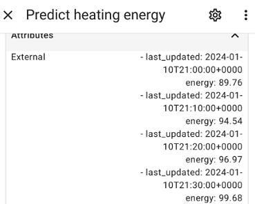

apps.yaml settings
The basic Predbat configuration is defined in the apps.yaml file.
Depending on how you installed Predbat the apps.yaml file will be held in one of three different directories in Home Assistant:
-
if you have used the Predbat app installation method,
apps.yamlwill be in the directory/addon_configs/6adb4f0d_predbat, -
with the HACS, Appdaemon app then Predbat installation method, it's in
/config/appdaemon/apps/batpred/config/, or -
if the combined AppDaemon/Predbat app installation method was used, it's in
/addon_configs/46f69597_appdaemon-predbat/apps.
You will need to use a file editor within Home Assistant (e.g. either the File editor or Studio Code Server apps)
to edit the apps.yaml file - see editing configuration files within Home Assistant if you need to install an editor.
This section of the documentation describes what the different configuration items in apps.yaml do.
When you edit apps.yaml, the change will automatically be detected and Predbat will be reloaded with the updated file.
You don't need to restart the Predbat or AppDaemon app for your edits to take effect.
Warning! apps.yaml file format
When editing the apps.yaml file you must ensure that the file remains correctly formatted. YAML files are especially finicky about how the file contents are indented
and it's very easy to end up with an incorrectly formatted file that will cause problems for Predbat.
The YAML Basics from This Smart Home is a good introduction video to how YAML should be correctly structured but as a brief introduction:
At the start of the apps.yaml file is the predbat module definition:
pred_bat:
module: predbat
class: PredBat
YAML can be thought of as a tree structure with 'pred_bat' at the top of the tree and everything else, e.g. 'module' and 'class' being children of the pred_bat tree.
Each child entry must be indented by two spaces under the parent it follows, so 'module' and 'class' are thus children of 'pred_bat'.
The YAML file consists of configuration item, a colon, and then the configuration value, for example, timezone is a child configuration item under the over-arching 'pred_bat' parent:
timezone: Europe/London
If the configuration item is a list of values, each of the list values appears on a new line, indented by a further two spaces, a dash, and then the value. For example, car_charging_response is a child of 'pred_bat' and consists of two values, 'yes' and 'no':
car_charging_now_response:
- 'yes'
- 'on'
Child entries can have children of their own, so for example rates_import_override is a child of the overarching 'pred_bat', and it has children configuration items of its own being 'start', 'end' and 'rate':
rates_import_override:
- start: '13:00:00'
end: '14:00:00'
rate: 0
The indentation of children being two spaces indented from their parents and there being two spaces before the dash are especially critical. It's easy to mis-edit and have one or three spaces which isn't valid YAML.
NB: the sequence of entries in apps.yaml doesn't matter, as long as the YAML itself is structured correctly you can move things and edit things anywhere in the file.
Templates
You can find template configurations in the following location: https://github.com/springfall2008/batpred/tree/main/templates
The GivEnergy GivTCP template will be installed by default but if you are using another inverter please copy the correct template for your inverter into the directory
where your apps.yaml is stored, replacing the existing apps.yaml file, and modify it from there.
Please read Inverter Setup for inverter control software and details of setting apps.yaml for non-GivEnergy inverters
Checking your apps.yaml
Syntax errors will be highlighted by the Home Assistant editor or via other YAML-aware editors such as VSCode.
Once you have completed your apps.yaml and started Predbat you may want to open the Predbat Web Interface and click on 'apps.yaml'. Review any items shown
in a red background as those do not match (it's okay for a 2nd inverter not to match if you only have one configured). Regular expressions that do not
match can be ignored if you are not supporting that feature (e.g. Car SoC if you don't have a car).
As an example these do not match and are shown in the web interface in red, I'm ignoring them as I only have one inverter and I'm using the Predbat internal Solcast rather than the external integration:
Storing secrets
Predbat supports the Home Assistant secrets mechanism for storing sensitive information like API keys, passwords, and tokens.
Using secrets.yaml
Create a secrets.yaml file in one of these locations (checked in order, only the first one is read):
- Path specified in
PREDBAT_SECRETS_FILEenvironment variable secrets.yamlin the same directory as yourapps.yaml/homeassistant/secrets.yaml(standard Home Assistant location)
The secrets.yaml file contains key-value pairs of your secrets, e.g.:
octopus_api_key: "sk_live_abc123xyz..."
solcast_api_key: "def456uvw..."
Referencing secrets in apps.yaml
Use the !secret tag followed by the secret key name in your apps.yaml. You only need to enter the keys you are using:
pred_bat:
module: predbat
class: PredBat
ha_key: !secret ha_key # Home Assistant Long-Lived Access Token
octopus_api_key: !secret octopus_api_key # Octopus API key (if using Octopus direct)
solcast_api_key: !secret solcast_api_key # Solcast API key (if using Solcast direct)
forecast_solar_api_key: !secret forecast_solar_api_key # Forecast.solar API key (if using Forecast.solar)
ge_cloud_key: !secret ge_cloud_key # GivEnergy API key (if using GE Cloud)
fox_key: !secret fox_key # Fox ESS API key and username (if using Fox Cloud)
axle_api_key: !secret axle_api_key # Axle API key (if using Axle VPP)
When Predbat loads, it will automatically replace !secret octopus_api_key with the actual value from secrets.yaml.
If a secret is referenced in apps.yaml but not found in secrets.yaml, Predbat will log a warning and the configuration item will be set to None.
Benefits of using secrets
- Keeps sensitive information separate from configuration files
- Makes it safer to share your
apps.yamlfor troubleshooting - All secrets stored in one centralized location
- Compatible with Home Assistant's secrets system
Basics
Basic configuration items
prefix
Set to the prefix name to be used for all entities that Predbat creates in Home Assistant. Default 'predbat'. Unlikely that you will need to change this.
prefix: predbat
timezone
Set to your local timezone, the default is Europe/London. It must be set to a valid Python time zone for your location
timezone: Europe/London
currency_symbols
Sets your symbol to use for your main currency e.g. £, € or $ and for 1/100th unit e.g. p or c. You must define both currency_symbol entries.
currency_symbols:
- '£'
- 'p'
template
Initially set to True, this is used to stop Predbat from operating until you have finished configuring your apps.yaml.
Once you have made all other required changes to apps.yaml this line should be deleted or commented out:
template: True
Home Assistant connection
Predbat can speak directly to Home Assistant rather than going via AppDaemon.
If you are using a standard Predbat app then this will be automatic and you should normally not need to set this. If you find you get issues where Predbat cannot communicate with Home Assistant after running for a long period of time and you get web socket errors, then creating a HA access key as described below can resolve this.
If you run Predbat in a Docker container then you will need to set the URL or IP address of Home Assistant and an access key.
The access key is a long-lived security access token you can create inside Home Assistant:
- Click on your user initials (bottom left) in HA;
- Click the Security tab
- Scroll to the bottom of the security screen and under 'Long-lived Access tokens', click 'Create Token' then copy the generated access token into ha_key in apps.yaml
Currently, if this communication is not established Predbat will fall back to AppDaemon, however, some users have experienced failures due to a 10-second timeout set by AppDaemon.
In future versions of Predbat, AppDaemon will be removed.
ha_url: 'http://homeassistant.local:8123'
ha_key: 'xxxxxxxxxxx'
NOTE: It's recommended to store ha_key in secrets.yaml and reference it as ha_key: !secret ha_key - see Storing secrets.
TIP: You can replace homeassistant.local with the IP address of your Home Assistant server if you have it set to a fixed IP address. This will remove the need for a DNS lookup of the IP address every time Predbat talks to Home Assistant and may improve reliability as a result.
threads
If defined sets the number of threads to use during plan calculation, the default is 'auto' which will use the same number of threads as you have CPUs in your system.
Valid values are:
- 'auto' - Use the same number of threads as your CPU count
- '0' - Don't use threads - disabled
- 'N' - Use N threads, recommended values are between 2 and 8
threads: auto
enable_coarse_fine_levels
Controls the two-pass coarse/fine optimization algorithm for improved planning performance. The default is True (enabled).
When enabled, Predbat uses a two-pass optimization strategy:
- Coarse pass: Quickly evaluates a reduced set of slot length combinations to identify approximately optimal charge/export window sizes
- Fine pass: Refines the search by focusing only on slot lengths near those identified as optimal
This significantly reduces planning time while maintaining near-optimal results. You can disable this by setting it to False if needed.
enable_coarse_fine_levels: True
Web interface
Docker users can change the web port for the Predbat web interface by setting web_port to a new port number. The default port of 5052 must always be used for the Predbat app.
web_port: 5052
notify_devices
A list of device names to notify when Predbat sends a notification. The default is just 'notify' which contacts all mobile devices
notify_devices:
- mobile_app_treforsiphone12_2
days_previous
Predbat needs to know what your likely future house load will be to set and manage the battery level to support it.
days_previous defines a list (which has to be entered as one entry per line) of the previous days of historical house load that are to be used to predict your future daily load.
It's recommended that you set days_previous so Predbat calculates an average house load using multiple days' history so that 'unusual' load activity (e.g. saving sessions, "big washing day", etc) get averaged out.
For example, if you want Predbat to average house load for the past week:
days_previous:
- 2
- 3
- 4
- 5
- 6
- 7
- 8
Or if you want Predbat to take the average of the same day for the last two weeks:
days_previous:
- 7
- 14
Or to just assume that house load on a particular day is the same as the same day of last week (not recommended):
days_previous:
- 7
Further details and worked examples of how days_previous works are covered at the end of this document.
Do keep in mind that Home Assistant only keeps 10 days of history by default, so if you want to access more than this for Predbat you might need to increase the number of days of history
kept in HA before it is purged by editing and adding the following to the /homeassistant/configuration.yaml configuration file and restarting Home Assistant afterwards:
recorder:
purge_keep_days: 14
days_previous_weight - A list (again with one entry per line) of weightings to be applied to each of the days in days_previous.
For example, to apply a 100% weighting for the first-day entry in days_previous, but only a 50% weighting to the second day in days_previous:
days_previous_weight:
- 1
- 0.5
The default value is 1, and all history days are equally weighted, so if you don't want to weight individual days you can simply use:
days_previous_weight:
- 1
forecast_hours
the number of hours that Predbat will forecast, 48 is the suggested amount, although other values can be used such as 30 or 36 if you have a small battery and thus don't need to forecast 2 days ahead.
forecast_hours: 48
plan_random_delay
Can set the maximum number of seconds of delay when recalculating the plan after it expires. The exact delay will be between 0 and this value. The default is 0.
plan_random_delay: 30
Inverter information
The template apps.yaml for each inverter type comes pre-configured with regular expressions that should auto-discover the Home Assistant entity names for that inverter type.
If you have more than one inverter or entity names are non-standard then you will need to edit apps.yaml for your inverter entities.
Givenergy Cloud Direct
Predbat now supports direct communication with the GivEnergy cloud services instead of local control via GivTCP to your inverter.
Log into the GivEnergy Portal web site and create an API key and copy it into the ge_cloud_key setting in apps.yaml.
If you set ge_cloud_automatic to True, the number of inverters and their settings will be configured automatically. Or, if you set ge_cloud_automatic to False then you need to manually configure ge_cloud_serial to your inverter serial number for Predbat to use on the GivEnergy Cloud.
If you set ge_cloud_data to False then Predbat will use the local Home Assistant data for history rather than the cloud data; you will need to wait until you have a few days of history established (at least days_previous days) before this will work correctly.
ge_cloud_direct: True
ge_cloud_automatic: True
ge_cloud_serial: '{geserial}'
ge_cloud_key: 'xxxxx'
ge_cloud_data: True
NOTE: It's recommended to store ge_cloud_key in secrets.yaml and reference it as ge_cloud_key: !secret givenergy_api_key - see Storing secrets.
SolaX Cloud Direct
Predbat supports direct communication with the SolaX Cloud API to control SolaX inverters and batteries without requiring local integrations.
To use SolaX Cloud Direct, you need to obtain API credentials (client ID and client secret) from your SolaX Cloud account.
Getting your SolaX Cloud API credentials
- Log in to your SolaX Cloud account at: - EU: https://www.solaxcloud.com - US: https://www.solaxcloud.us - CN: https://www.solaxcloud.com.cn
- Navigate to Settings → API Management (or Developer Settings)
- Create a new API application or access existing credentials
- Copy your Client ID and Client Secret
- Add these to your
apps.yamlconfiguration
Basic SolaX Cloud configuration
If you set solax_automatic to true, Predbat will automatically discover your plants, inverters, and batteries, and configure all necessary entities without manual intervention.
solax_client_id: 'your_client_id_here'
solax_client_secret: 'your_client_secret_here'
solax_region: 'eu' # Options: 'eu', 'us', or 'cn'
solax_automatic: true
solax_enable_controls: true
NOTE: It's strongly recommended to store solax_client_id and solax_client_secret in secrets.yaml and reference them as:
solax_client_id: !secret solax_client_id
solax_client_secret: !secret solax_client_secret
See Storing secrets for more information.
Region selection
Set solax_region based on where your SolaX Cloud account is registered:
'eu'- European region (default) - openapi-eu.solaxcloud.com'us'- United States region - openapi-us.solaxcloud.com'cn'- China region - openapi.solaxcloud.com
Optional configuration options
solax_plant_id: If you have multiple plants registered in your SolaX Cloud account but only want Predbat to control specific plants, you can filter by plant ID:
solax_plant_id: '1618699116555534337'
If not specified, Predbat will control all plants found in your account.
solax_enable_controls: Set to False to disable automatic inverter control (read-only mode). Useful for monitoring without control:
solax_enable_controls: False
Automatic configuration (solax_automatic: true)
When solax_automatic is enabled, Predbat will:
- Discover all plants with inverters and batteries in your SolaX Cloud account
- Automatically configure
num_invertersbased on the number of plants found - Set
inverter_typetoSolaxCloudfor each plant - Create and configure all required entities including: - Battery power, SOC, capacity, and temperature sensors - Inverter and PV power sensors - Energy totals (yield, charged, discharged, imported, exported, load) - Charge/discharge schedule controls (start/end times, target SOC, rates) - Enable/disable switches for charge and export schedules - Reserve SOC setting
No manual entity configuration is required when using automatic mode.
Published entities
When SolaX Cloud is configured, Predbat creates the following entities for each plant (replace {plant_id} with your actual plant ID):
Sensors:
sensor.predbat_solax_{plant_id}_battery_soc- Battery state of charge (kWh)sensor.predbat_solax_{plant_id}_battery_capacity- Battery capacity (kWh)sensor.predbat_solax_{plant_id}_battery_temperature- Battery temperature (°C)sensor.predbat_solax_{plant_id}_battery_max_power- Battery maximum power (W)sensor.predbat_solax_{plant_id}_inverter_max_power- Inverter maximum power (W)sensor.predbat_solax_{plant_id}_pv_capacity- PV array capacity (kWp)sensor.predbat_solax_{plant_id}_total_yield- Total PV generation (kWh)sensor.predbat_solax_{plant_id}_total_charged- Total battery charged (kWh)sensor.predbat_solax_{plant_id}_total_discharged- Total battery discharged (kWh)sensor.predbat_solax_{plant_id}_total_imported- Total grid import (kWh)sensor.predbat_solax_{plant_id}_total_exported- Total grid export (kWh)sensor.predbat_solax_{plant_id}_total_load- Total load consumption (kWh, calculated)sensor.predbat_solax_{plant_id}_total_earnings- Total earnings from exports
Control entities:
number.predbat_solax_{plant_id}_setting_reserve- Battery reserve SOC (%)select.predbat_solax_{plant_id}_battery_schedule_charge_start_time- Charge start timeselect.predbat_solax_{plant_id}_battery_schedule_charge_end_time- Charge end timenumber.predbat_solax_{plant_id}_battery_schedule_charge_target_soc- Charge target SOC (%)number.predbat_solax_{plant_id}_battery_schedule_charge_rate- Charge rate (W)switch.predbat_solax_{plant_id}_battery_schedule_charge_enable- Enable/disable chargingselect.predbat_solax_{plant_id}_battery_schedule_export_start_time- Export start timeselect.predbat_solax_{plant_id}_battery_schedule_export_end_time- Export end timenumber.predbat_solax_{plant_id}_battery_schedule_export_target_soc- Export target SOC (%)number.predbat_solax_{plant_id}_battery_schedule_export_rate- Export rate (W)switch.predbat_solax_{plant_id}_battery_schedule_export_enable- Enable/disable exporting
Manual configuration (solax_automatic: False)
If you disable automatic configuration, you must manually configure inverter entities in apps.yaml similar to other inverter types. In this case, set:
solax_automatic: False
num_inverters: 1
inverter_type: 'SolaxCloud'
Then manually configure all required entities following the standard Predbat inverter configuration pattern.
Multi-inverter / Multi-plant setup
If you have multiple SolaX plants, automatic configuration will handle them automatically. Each plant will be treated as a separate inverter in Predbat's configuration.
Supported inverter types (SolaX cloud)
SolaX Cloud API supports various SolaX inverter models including:
- X1 series (single-phase)
- X3 series (three-phase)
- X3-Hybrid series
- Other SolaX cloud-connected inverters
Both residential (business_type=1) and commercial (business_type=4) installations are supported.
Troubleshooting (SolaX cloud)
If you experience connection issues:
- Verify your client ID and client secret are correct
- Confirm you're using the correct region setting
- Check that your SolaX Cloud account has API access enabled
- Review Predbat logs for authentication errors
- Test your API credentials using the standalone test:
cd /config/appdaemon/apps/predbat
python3 solax.py --client-id YOUR_CLIENT_ID --client-secret YOUR_CLIENT_SECRET --region eu
Solis Cloud API
EXPERIMENTAL: This is a new integration and may have issues.
Predbat includes support for Solis inverters via the Solis Cloud API, allowing direct cloud-based monitoring and control of Solis hybrid inverters with battery storage.
Configuration (solis)
Add the following to your apps.yaml to configure the Solis Cloud integration:
solis_api_key: !secret solis_api_key
solis_api_secret: !secret solis_api_secret
solis_automatic: True
solis_control_enable: True
Configuration options:
solis_api_key- Your Solis Cloud API Key (KeyId) - obtain from Solis Cloud portalsolis_api_secret- Your Solis Cloud API Secret (KeySecret) - obtain from Solis Cloud portalsolis_inverter_sn- Default is all inverters on your account unless set. Can be a single string or a list for multiple inverters.solis_automatic- Set toTrueto automatically configure Predbat entities (recommended, default:False)solis_base_url- Solis Cloud API base URL (optional, auto-detects region)solis_control_enable- Enable/disable control commands (default:True, set toFalsefor monitoring only)
NOTE: It's strongly recommended to store api_key and api_secret in secrets.yaml and reference them as !secret solis_api_key - see Storing secrets.
Important notes (Solis)
IMPORTANT: The Solis Cloud integration cannot automatically determine your battery size from the inverter. You have two options:
- Manual configuration (recommended): Set
soc_maxinapps.yamlmanually with your battery capacity in kWh:
soc_max:
- 13.5
Replace 13.5 with your actual battery capacity in kWh.
- Automatic detection: Leave
soc_maxunset or set to 0, and Predbat will attempt to automatically determine battery size by analyzing historical charging data. This requires: - At least several days of historical data fromsoc_percentandbattery_powersensors - Charging periods with at least 15% SoC change - May take time to collect sufficient data
Manual configuration is recommended as it's immediate and more reliable.
Automatic configuration (solis_automatic: True)
When automatic: True (recommended), Predbat will automatically create and configure the following entities for each inverter:
Sensors:
- Battery SOC, capacity, voltage, current, power, and temperature
- PV power and total energy
- Grid power and import/export energy
- Load power and consumption
- Inverter status and product model
Control entities:
- Reserve SOC setting
- Charge/discharge slot times (6 slots supported)
- Charge/discharge target SOC per slot
- Charge/discharge power rates
- Charge/discharge enable switches per slot
- Storage mode selection
- Battery protection settings
No manual entity configuration is required when using automatic mode.
Manual configuration (solis_automatic: False)
If you disable automatic configuration, you must manually configure inverter entities in apps.yaml similar to other inverter types. In this case, set:
solis_api_key: !secret solis_api_key
solis_api_secret: !secret solis_api_secret
solis_automatic: False
solis_control_enable: True
num_inverters: 1
inverter_type: 'SolisCloud'
soc_max:
- 13.5
Then manually configure all required entities following the standard Predbat inverter configuration pattern.
Supported inverter types (Solis Cloud)
The Solis Cloud API supports various Solis hybrid inverter models with battery storage, including:
- RHI series (single-phase hybrid)
- RAI series (three-phase hybrid)
- S5 series hybrid inverters
- Other Solis cloud-connected hybrid inverters
Both V1 (older firmware) and V2 (newer firmware) time window formats are automatically detected and supported.
Troubleshooting (Solis Cloud)
If you experience connection issues:
- Verify your API key and secret are correct
- Check your inverter serial number is exact (no spaces or extra characters)
- Confirm your Solis Cloud account has API access enabled
- Review Predbat logs for authentication errors
- Ensure
soc_maxis set correctly inapps.yaml(battery capacity in kWh) - Check that
control_enableis set appropriately for your needs
num_inverters
The number of inverters you have. If you increase this above 1 you must provide multiple of each of the inverter entities
num_inverters: 1
inverter_type
inverter_type defaults to 'GE' (GivEnergy) if not set in apps.yaml, or should be set to one of the inverter types that are already pre-programmed into Predbat:
FoxCloud: Fox Cloud integration FoxESS: FoxESS via modbus GE: GivEnergy via GivTCP GEC: GivEnergy Cloud integration GEE: GivEnergy EMC GS: Ginlong Solis HU: Huawei Solar SA: Solar Assistant SE: SolarEdge SF: Sofar HYD SFMB: Sofar HYD with solarman modbus SIG: SigEnergy Sigenstor SK: Sunsynk SolaxCloud: SolaX Cloud API integration (EXPERIMENTAL) SolisCloud: Solis Cloud API integration (EXPERIMENTAL) SX4: Solax Gen4 (Modbus Power Control)
If you have multiple inverters, then set inverter_type to a list of the inverter types.
If you have created a custom inverter type in apps.yaml then inverter_type must be set to the same code as has been used in the custom inverter definition.
geserial
Only for GE inverters, this is a helper regular expression to find your inverter serial number, if it doesn't work edit it manually or change individual entities to match.
If you have more than one GivEnergy inverter you will need one per inverter to be used in the later configuration lines. If you only have a single GivEnergy inverter then comment out all lines that refer to geserial2 in apps.yaml.
geserial: 're:sensor.givtcp_(.+)_soc_kwh'
geserial2: 're:sensor.givtcp2_(.+)_soc_kwh'
If you are running GivTCP v3 and have an 'All-In-One' (AIO) or a 3-phase inverter then the helper regular expression will not correctly work
and you will need to manually set geserial in apps.yaml to your inverter serial number which must be entered in lower case, e.g.:
geserial: 'chNNNNgZZZ'
TIP: If you have a single GivEnergy AIO, all control is directly to the AIO and the gateway is not required.
Check the GivTCP configuration to determine whether inverter 1 (the givtcp sensors) is the AIO or the gateway, or inverter 2 (the givtcp2 sensors) is the AIO or gateway.
Then in apps.yaml comment out the lines corresponding to the gateway, leaving just the givtcp or givtcp2 lines for the AIO.
Also, delete the appropriate givtcp_rest inverter control line corresponding to the gateway so that Predbat controls the AIO directly.
TIP2: If you have multiple GivEnergy AIO's, all the AIO's are controlled by the AIO gateway and not controlled individually.
geserial should be manually configured to be your AIO gateway serial number 'gwNNNNgZZZ' and all the geserial2 lines should be commented out in apps.yaml.
You should also delete the second givtcp_rest inverter control line so that Predbat controls the AIOs via the gateway.
GivTCP version 3 is required for multiple AIOs or a 3-phase inverter.
Historical data
Predbat can either get historical data (house load, import, export and PV generation) directly from GivTCP or it can obtain it from the GivEnergy cloud. Unless you have a specific reason to not use the GivTCP data (e.g. you've lost your GivTCP data), its recommended to use GivTCP.
Data from Home Assistant
The following configuration entries in apps.yaml are pre-configured to automatically use the appropriate sensors.
If you have a 3-phase electricity supply and one inverter (and battery) on each phase then you will need to add one line for the load, import, export and PV sensors for each of the 3 phases.
If you have a single-phase electricity supply and multiple inverters on the phase then you will need to add one line for each of the load and PV sensors. You don't need multiple lines for the import or export sensors as each inverter will give the same total import or export information.
Edit if necessary if you have non-standard sensor names:
- load_today - Entity name for the house load in kWh today (must be incrementing)
- load_power - Current load power sensor in W (used with load_power_fill_enable to improve load_today data accuracy)
- load_power_fill_enable - When True (default), uses load_power data to fill gaps and smooth load_today sensor data. Set to False to disable this feature.
- import_today - Imported energy today in kWh (incrementing)
- export_today - Exported energy today in kWh (incrementing)
- pv_today - PV energy today in kWh (incrementing). If you have multiple inverters, enter each inverter PV sensor on a separate line.
If you have an AC-coupled inverter then enter the Home Assistant sensor for your PV inverter.
If you don't have any PV panels, comment or delete this line out ofapps.yaml.
Note: these '_today' entity names must all be energy sensors recording electricity measured over a time period, NOT power sensors which measure instantaneous power.
The load_power_fill_enable feature helps to improve the accuracy of historical load data by using instantaneous power readings to fill gaps and smooth out load_today sensors that update infrequently (e.g., sensors that increment in kWh units may only update every hour). This preprocessing happens before the main load data analysis and can significantly improve prediction accuracy, especially for systems with coarse-grained energy sensors.
See the Workarounds section below for configuration settings for scaling these if required.
If you have multiple inverters then you may find that the load_today figures are incorrect as the inverters share the house load between them.
In this circumstance, one solution is to create a Home Assistant template helper to calculate house load from {pv generation}+{battery discharge}-{battery charge}+{import}-{export}.
The example below is defined in configuration.yaml (not the HA user interface) so it only updates every 5 minutes rather than on every underlying sensor state change:
e.g.
# Home consumption energy sensor, updated every 5 minutes instead of the default of every sensor state change
template:
- trigger:
- platform: time_pattern
minutes: "/5"
sensor:
- name: "House Load Today"
unique_id: "house_load_today"
unit_of_measurement: kWh
state_class: total
device_class: energy
state: >
{% set pv_xxx = states('sensor.givtcp_xxx_pv_energy_today_kwh') %}
{% set pv_yyy = states('sensor.givtcp2_yyy_pv_energy_today_kwh') %}
{% set dis_xxx = states('sensor.givtcp_xxx_battery_discharge_energy_today_kwh') %}
{% set dis_yyy = states('sensor.givtcp2_yyy_battery_discharge_energy_today_kwh') %}
{% set chg_xxx = states('sensor.givtcp_xxx_battery_charge_energy_today_kwh') %}
{% set chg_yyy = states('sensor.givtcp2_yyy_battery_charge_energy_today_kwh') %}
{% set import = states('sensor.givtcp_xxx_import_energy_today_kwh') %}
{% set export = states('sensor.givtcp_xxx_export_energy_today_kwh') %}
{% if pv_xxx in ['unknown','unavailable'] or
pv_yyy in ['unknown','unavailable'] or
dis_xxx in ['unknown','unavailable'] or
dis_yyy in ['unknown','unavailable'] or
chg_xxx in ['unknown','unavailable'] or
chg_yyy in ['unknown','unavailable'] or
import in ['unknown','unavailable'] or
export in ['unknown','unavailable'] %}
{{ this.state }}
{% else %}
{% if now().hour == 0 and now().minute < 1 %}
0.0
{% else %}
{% set load = (import | float(0)
+ pv_xxx | float(0)
+ pv_yyy | float(0)
+ dis_xxx | float(0)
+ dis_yyy | float(0)
- export | float(0)
- chg_xxx | float(0)
- chg_yyy | float(0)) | round(2) %}
{% set previous = this.state | float(0) %}
{{ [load, previous] | max }}
{% endif %}
{% endif %}
The template looks complex but it ensures that if any of the underlying sensors is unavailable, the load sensor returns the previous energy value, at midnight the sensor resets to zero properly, and during the day the sensor can only ever increase, never decrease.
If you are using the LoadML feature of Predbat and have multiple inverters that share the load, you will similarly need to create a template load power sensor:
# Home consumption power sensor, updated every 5 minutes instead of the default of every sensor state change
- trigger:
- platform: time_pattern
minutes: "/5"
sensor:
- name: "House Load Power"
unique_id: "house_load_power"
unit_of_measurement: kW
device_class: power
state_class: measurement
state: >
{% set pv_xxx = states('sensor.givtcp_xxx_pv_power') %}
{% set pv_yyy = states('sensor.givtcp2_yyy_pv_power') %}
{% set bat_xxx = states('sensor.givtcp_xxx_battery_power') %}
{% set bat_yyy = states('sensor.givtcp2_yyy_battery_power') %}
{% set grid = states('sensor.givtcp_xxx_grid_power') %}
{% if pv_xxx in ['unknown','unavailable'] or
pv_yyy in ['unknown','unavailable'] or
bat_xxx in ['unknown','unavailable'] or
bat_yyy in ['unknown','unavailable'] or
grid in ['unknown','unavailable'] %}
{{ this.state }}
{% else %}
{{ (pv_xxx | float(0)
+ pv_yyy | float(0)
+ bat_xxx | float(0)
+ bat_yyy | float(0)
- grid | float(0)) | round(2) }}
{% endif %}
If you have GivEnergy inverters and are using REST mode, then also set givtcp_rest_power_ignore to True in apps.yaml for both inverter so Predbat uses your custom power sensor (and not the inverter sensors via REST).
GivEnergy Cloud Data
If you have an issue with the GivTCP data, Predbat can get the required historical data from the GivEnergy cloud instead. This data is updated every 30 minutes. Connecting to the cloud is less efficient and means that Predbat will be dependent upon your internet connection and the GivEnergy cloud to operate.
- ge_cloud_data - When True Predbat will connect to the GivEnergy cloud rather than GivTCP sensors for historical load_today, import_today and export_today inverter data
- ge_cloud_serial - Set the inverter serial number to use for the cloud data
- ge_cloud_key - Set to your API Key for the GE Cloud (long string)
If you need to create a ge_cloud_key, in the GivEnergy cloud portal:
- Click 'account settings' in the menu bar (icon of a person overlaid with a cogwheel)
- Click 'Manage Account Security' then 'Manage API Tokens' then 'Create API Token'
- Enter a name for the token e.g. 'Predbat'
- Select 'No expiry' for the token expiry duration, or choose a fixed duration but remember to create a new token before it expires as Predbat's access will stop once the token expires
- Ensure that 'api:inverter' is ticked
- Create token
- Finally, copy/paste the token created into ge_cloud_key within apps.yaml
GivEnergy Cloud controls
Experimental
Predbat now supports GE Cloud controls directly from inside Predbat. When enabled Predbat will connect directly with the GE Cloud and expose the controls of your inverter inside home assistant.
Note You will still have to configure apps.yaml to point to these controls.
- ge_cloud_direct - Set to True to enable GE Cloud direct access
- ge_cloud_key - Set to your API Key for the GE Cloud (long string)
Load filtering
By default, if Predbat sees a gap in the historical load data it will fill it with average data. This is to help in the cases of small amounts of lost data. For entire lost days you should change days_previous to point to different days(s) or include 3 or more days and if you set switch.predbat_load_filter_modal to true, the lowest day's historical load will be discarded.
- load_filter_threshold - Sets the number of minutes of zero load data to be considered a gap (that's filled with average data), the default is 30. To disable, set it to 1440.
iBoost energy
- iboost_energy_today - Set to a sensor which tracks the amount of energy sent to your solar diverter, which can also be used to subtract from your historical load for more accurate predictions.
Inverter control configurations
inverter_limit
One per inverter.
Controls the way Predbat models your inverter, this does not change the way it is controlled.
When set, it defines the maximum AC output power in watts for your inverter. This is used by Predbat in calculating the plan to emulate clipping that occurs in the inverter when your solar produces more than the inverter can handle, but it won't be that accurate as the source of the data isn't minute-by-minute.
For a Hybrid inverter make sure the Hybrid Inverter toggle is on, you should set the inverter limit to be the maximum power of the inverter in Watts e.g. a 5kW inverter will have a limit of 5000. If you have a separate Micro Inverter for your PV then you should add its power to the inverter limit
For an AC Coupled inverter make sure the Hybrid Inverter toggle is off and set this to the power of your AC Coupled inverter. Do not add on separate Micro Inverters to the total power.
If you have multiple inverters then set the value of each one in a list format.
NB: inverter_limit is ONLY used by Predbat to improve the quality of the plan, any solar clipping is done by the inverter and is not controlled by Predbat.
export_limit
One per inverter (optional).
Controls the way Predbat models your inverter, this does not change the way it is controlled.
When set defines the maximum watts of AC power your inverter can export to the grid at (e.g. 2500). This is used by Predbat in calculating the plan to emulate your inverter's software export limit setting that you will have if your G98/G99 approval was lower than your maximum inverter power (check your install information for details).
If you do not set an export limit then it is assumed to be unlimited (and thus limited by your inverter or PV system).
inverter_limit_charge and inverter_limit_discharge
An optional list of values with one entry per inverter.
e.g.
inverter_limit_charge:
- 4200
inverter_limit_discharge:
- 3000
When set in Watts, overrides the maximum charge/discharge rate settings used when controlling the inverter.
This can be used if you need Predbat to cap your inverter battery rate (e.g. due to grid import/export limitations or to charge overnight at a slower rate to reduce inverter/battery heating). By default Predbat will normally configure all timed charges or discharges to be at the inverter's maximum rate and these options enable you to reduce that maximum rate. Low rate charging could also be used to slow down Predbat's charge rate whilst still meeting the battery plan.
inverter_can_charge_during_export
Global setting, defaults to True.
Controls the way Predbat models your inverter, this does not change the way it is controlled.
During a force export period if the generated solar exceeds the inverter limit or the export limit then the inverter will scale back the export rate. If this setting is True then the inverter can end up charging the battery from PV while still in Force Export mode. If this setting if False then the inverter will not charge the battery and the excess PV will be lost.
Controlling the Inverter
There are a few different ways to control your inverter:
- Home Assistant entity controls (standard)
- GivTCP REST Interface (GivEnergy Inverters only)
- Service API
- MQTT API
Home Assistant entity inverter control
Predbat can control inverters by updating Home Assistant entities.
The template apps.yaml for is pre-configured with regular expressions for many configuration items, but some of them may need updating to match your system.
If you only have a single inverter then the second inverter lines can be commented out if so desired or left in place (as they are ignored).
The givtcp_rest line should be commented out/deleted on anything but GivTCP REST mode.
Charge/Discharge rate
- charge_rate - Battery charge rate entity in watts
- discharge_rate - Battery discharge rate entity in watts
or
- charge_rate_percent - Battery charge rate entity in percent of maximum rate (0-100)
- discharge_rate_percent - Battery discharge max rate entity in percent of maximum rate (0-100)
or
- timed_charge_current - Battery charge rate entity in amps
- timed_discharge_current - Battery discharge rate entity in amps
Battery Information
- battery_voltage - Nominal maximum battery voltage (not current battery voltage) - only needed for inverters controlled via Amps and used internally by Predbat to convert Watts to Amps to control the inverter.
- battery_rate_max - Sets the maximum battery charge/discharge rate in watts (e.g. 6000). For GivEnergy inverters this can be determined from the inverter, but must be set for non-GivEnergy inverters or Predbat will default to 2600W. Predbat also uses battery_rate_max when creating charge and discharge curves, looking for charging or discharging at 95% of the max rate. Be careful of setting the rate at a value higher than your inverter can handle for grid charging in order for Predbat to be able to find the historical 'full rate' charging/discharging needed to correctly calculate the curves.
- soc_max - Entity name for the maximum charge level for the battery in kWh.
If not set or set to 0, Predbat will attempt to automatically determine the battery size by analyzing historical charging data from
soc_percentandbattery_powersensors. This requires at least several days of historical data with charging periods of 15% or more SoC change. If automatic detection fails, you must manually set this value. - battery_min_soc - When set limits the target SoC% setting for charge and discharge to a minimum percentage value
- reserve - sensor name for the reserve SoC % setting. The reserve SoC is the lower limit target % to discharge the battery down to.
- battery_temperature - Defined the temperature of the battery in degrees C (default is 20 if not set).
Power Data
Note this are not required for normal operation, only to produce power flow data or for battery curve calculations.
One entry per inverter:
- battery_power - Current battery power in W or kW
Battery power should be positive for discharge and negative for charge, if your sensor is the other way around then set battery_power_invert to True
- pv_power - Current PV power in W or kW
- load_power - Current load power in W or kW
- grid_power - Current grid power in W or kW
Grid power should be negative for import and positive for export, if your sensor is the other way around then set grid_power_invert to True
e.g:
battery_power:
- sensor.givtcp_{geserial}_battery_power
battery_power_invert:
- False
grid_power:
- sensor.givtcp_{geserial}_grid_power
grid_power_invert:
- False
pv_power:
- sensor.givtcp_{geserial}_pv_power
load_power:
- sensor.givtcp_{geserial}_load_power
Battery SoC
- soc_kw - Entity name of the battery SoC in kWh, should be the inverter one not an individual battery
or
- soc_percent Entity name of the battery SoC in percent of the maximum battery size, should be the inverter one not an individual battery
Inverter Info
- inverter_reserve_max - When set defines the maximum reserve setting in % (default is 100)
- inverter_mode - Givenergy inverter mode control
- inverter_time - Inverter timestamp, used to track the last update of the inverter data
- inverter_battery_rate_min - Defines the minimum discharge/charge rate of the battery in watts (default is 0)
Schedule
- charge_start_time - Battery charge start time entity - can be a HA select entity in format HH:MM or HH:MM:SS or a HA time entity.
- charge_end_time - Battery charge end time entity - can be a HA select entity in format HH:MM or HH:MM:SS or a HA time entity.
- discharge_start_time - Battery discharge start time, same format as charge_start_time.
- discharge_end_time - Battery discharge end time, same format as charge_end_time.
- charge_start_hour, charge_start_minute - Battery charge start time for inverters with separate hour and minute control entities.
- charge_end_hour, charge_end_minute - Ditto for battery charge end time.
- discharge_start_hour, discharge_start_minute - Ditto for battery discharge start time
- discharge_end_hour and discharge_end_minute - Ditto for battery discharge end time
- charge_time - Battery charge time entity for inverters that require a charge time expressed as a range in the format "start hour:start minute-end hour:end minute".
- discharge_time = Ditto battery discharge time expressed as a time range.
- charge_limit - Entity name for used to set the SoC target for the battery in percentage (AC charge target)
- scheduled_charge_enable - Switch to enable/disable battery charge according to the charge start/end times defined above.
- scheduled_discharge_enable - Switch to enable/disable battery discharge according to the discharge start/end times defined above.
- discharge_target_soc - Set the battery target percent for timed exports, will be written to minimum by Predbat.
- pause_mode - GivEnergy pause mode register (if present)
- pause_start_time - scheduled pause start time (only if supported by your inverter)
- pause_end_time - scheduled pause start time (only if supported by your inverter)
- idle_start_time - start time for idle (Eco) mode - for GivEnergy EMS
- idle_end_time - end time for idle (Eco) mode - for GivEnergy EMS
If you are using REST control the configuration items should still be kept as not all controls work with REST.
Some inverters require a "button press" to be triggered by Predbat to update the charge/discharge schedules in the inverter after the appropriate HA entities have been set.
If your inverter features a combined charge/discharge update button, the charge_discharge_update_button can be set to the button name. e.g.:
charge_discharge_update_button:
- button.solis_charge_discharge
If your inverter has separate buttons for setting charging and discharging schedules on the inverter, set both charge_update_button and discharge_update_button. e.g.:
charge_update_button:
- button.solis_charge
discharge_update_button:
- button.solis_discharge
TIP: Some older GivEnergy inverters such as the Gen 1 hybrid and AC3 inverter that have had firmware upgrades to introduce battery pause functionality do not have sufficient memory on the inverter to provide control of battery pause start and end times.
GivTCP does not recognise this and so still provides the select.givtcp_xxxx_battery_pause_start_time_slot and end_time_slot controls, but they do not work.
Predbat can report an error trying to set them, or they revert back to 00:00:00 after being changed by Predbat and there will also be errors setting these controls reported in the GivTCP log.
For these inverters the pause_start_time and pause_end_time entries should be commented out in apps.yaml to stop Predbat trying to use them.
See section below on creating the battery charge power curve.
REST Interface inverter control
For GivEnergy inverters Predbat can control the inverter directly via REST instead of via the Home Assistant GivTCP inverter controls detailed above.
When configured in apps.yaml, control communication from Predbat to GivTCP is via REST which bypasses some issues with MQTT.
- givtcp_rest - One entry per Inverter, sets the GivTCP REST API URL (http://homeassistant.local:6345
is the normal address and port for the first inverter, and the same address but ending :6346 if you have a second inverter - if you don't have a second inverter
(or if you have multiple AIO's that are controlled through the gateway), delete the second line.
If you are using Docker then change 'homeassistant.local' to the Docker IP address.
TIP: You can replace homeassistant.local with the IP address of your Home Assistant server if you have it set to a fixed IP address. This may improve reliability of the REST connection as it doesn't need to lookup the HA server IP address each time.
To check your REST is working open up the readData API point in a Web browser e.g: http://homeassistant.local:6345/readData
If you get a bunch of inverter information back then it's working!
Note that Predbat will still retrieve inverter information via REST, this configuration only applies to how Predbat controls the inverter.
- givtcp_rest_power_ignore - Optional, defaults to False. When set to True for a given inverter, Predbat will use the configured sensor entities (load_power, pv_power, grid_power, battery_power) instead of reading power values from the GivTCP REST API. This can be useful if you want to use alternative sensors or if the REST API power readings are unreliable. Set this to False (or omit) to use REST API power readings (default behavior).
Service API
Some inverters have the Service API enabled, this allows the configuration to call an arbitrary Home Assistant service to start/stop charging and discharging
- charge_start_service - Should be set to a service that is called when charging starts
- charge_freeze_service - If your inverter supports charge freeze set to a service that starts this mode
-
charge_stop_service - Should be set to a service that is called when charging/charge freeze stops
-
discharge_start_service - Should be set to a service that is called when force export (discharge) starts
- discharge_freeze_service - If your inverter supports export freeze set to a service that starts this mode
- discharge_stop_service - Should be set to a service that is called when export/export freeze stops
Services that are not configuration will not be called.
Example service is below:
charge_start_service:
service: switch.turn_off
entity_id: "switch.sunsynk_inverter_use_timer"
See Service API for details.
Note that device_id will be passed to the service automatically, or it can be set in apps.yaml.
MQTT API
Some Inverters are enabled with an MQTT API, in this case certain MQTT messages are send via the HA MQTT service.
The mqtt_topic in apps.yaml set in the root of the MQTT topic (shown as topic below).
Set reserve
Called when the reserve (discharge-to %) is changed
topic: topic/set/reserve payload: reserve
Set target soc
Called when the target (charge-to %) SoC is changed
topic: topic/set/target_soc payload: soc
Set charge rate
Called to change the charge rate in Watts
topic: topic/set/charge_rate payload: charge_rate
Set discharge rate
Called to change the discharge rate in Watts
topic: topic/set/discharge_rate payload: discharge_rate
Set charge
Called when a charge is started
topic: topic/set/charge payload: charge_rate
Set discharge
Called when a forced export (discharge) is started
topic: topic/set/discharge payload: discharge_rate
Set auto
Called when a charge/discharge is cancelled and the inverter goes back to home demand mode.
topic: topic/set/auto payload: true
Solcast Solar Forecast
As described in the Predbat installation instructions, Predbat needs a solar forecast in order to predict solar generation and battery charging which can be provided by the Solcast integration.
By default, the template apps.yaml is pre-configured to use the Solcast forecast integration for Home Assistant.
The apps.yaml contains regular expressions for the following configuration items that should auto-discover the Solcast forecast entity names.
They are unlikely to need changing although a few people have reported their entity names don't contain 'solcast' so worth checking, or editing if you have non-standard names:
- pv_forecast_today - Entity name for today's Solcast forecast
- pv_forecast_tomorrow - Entity name for tomorrow's Solcast's forecast
- pv_forecast_d3 - Entity name for Solcast's forecast for the day after tomorrow
- pv_forecast_d4 - Entity name for Solcast's forecast for two days after tomorrow
Sensors for d5, d6 & d7 are supported, but not that useful so are not pre-defined in the template.
If you do not have a PV array then comment out or delete these Solcast lines from apps.yaml.
Alternatively, Predbat can obtain the solar forecast directly from Solcast and the Solcast integration is thus not required.
Uncomment the following Solcast cloud interface settings in apps.yaml and set the API key correctly:
solcast_host: 'https://api.solcast.com.au/'
solcast_api_key: 'xxxx'
solcast_poll_hours: 8
NOTE: It's recommended to store solcast_api_key in secrets.yaml and reference it as solcast_api_key: !secret solcast_api_key - see Storing secrets.
Note that by default the Solcast API will be used to download all sites (up to 2 for hobby accounts), if you want to override this set your sites manually using solcast_sites as an array of site IDs:
solcast_sites:
- 'xxxx'
If you have more than 2 array orientations and thus more than one Solcast API key, enter each key in a list:
solcast_api_key:
- xxxx_API_key_1
- yyyy_API_key_2
Keep in mind hobbyist accounts only have 10 polls per day so you need to ensure that the solcast_poll_hours refresh period is set so that you do not exceed the 10 poll limit. If you have two arrays then each Solcast refresh will consume 2 polls so its suggested that you set solcast_poll_hours to 4.8 to maximise your polls over a 24 hour period (5 polls a day, 24/5=poll every 4.8 hours). If you use the same Solcast account for other automations the total polls need to be kept under the limit or you will experience failures.
If you use the same Solcast account for other automations the poll frequency will need to be reduced to ensure the total polls is kept under your account daily poll limit or you will experience failures.
If you have multiple PV arrays connected to hybrid inverters or you have AC-coupled inverters, then ensure your PV configuration in Solcast covers all arrays.
If however, you have a mixed PV array setup with some PV that does not feed into the inverters that Predbat is managing
(e.g. hybrid GE inverters with older firmware but a separate older FIT array that directly feeds AC into the house),
then it's recommended that Solcast is only configured for the PV connected to the inverters that Predbat is managing.
NB: Gen2, Gen3 and Gen1 hybrid inverters with the 'fast performance' firmware can charge their batteries from excess AC that would be exported,
so for these inverters, you should configure Solcast with your total solar generation capability.
Solcast produces 3 forecasted PV estimates, the 'central' (50% or most likely to occur) PV forecast, the '10%' (1 in 10 more cloud coverage 'worst case') PV forecast,
and the '90%' (1 in 10 less cloud coverage 'best case') PV forecast.
By default, Predbat will use the central (PV50) estimate and apply to it the input_number.predbat_pv_metric10_weight weighting of the 10% (worst case) estimate.
You can thus adjust the metric10_weight to be more pessimistic about the solar forecast.
Predbat models cloud coverage by using the difference between the PV and PV10 forecasts to work out a cloud factor, this modulates the PV output predictions up and down over the plan slot duration as if there were passing clouds. This can have an impact on planning, especially for things like freeze charging which could assume the PV will cover the house load but it might not due to clouds.
- pv_estimate in
apps.yamlcan be used to configure Predbat to always use the 10% forecast by setting the configuration item to '10', or '90' to always use the 90% PV estimate (not recommended!).
Set to blank or delete / comment out the line to use the default central estimate.
If pv_estimate is set to 10 then input_number.predbat_pv_metric10_weight in Home Assistant should be set to 1.0.
See also PV configuration options in Home Assistant.
Forecast.solar Solar Forecast
The Forecast.solar service can also be used in Predbat, the free version offer access without an API Key but is limited to hourly data and does not provide any 10% or 90% data. Predbat Solar calibration can use past data to improve this information and provide the 10% data.
You can create one or more rooftops by providing a list of the data for each one, they will be summed up automatically.
The latitude and longitude are your location in world, or for the UK you can set a postcode.
The azimuth is the direction of the roof: 0=North, -90=East, 90=West, -180/180 = South The declination is the angle of the panels, e.g. 45 for a sloped roof or 20 for those on a flat roof The efficiency relates to the aging of your panels, 0.95 is for newer systems but they will lose around 1% each year. The optional forecast_solar_max_age setting sets the number of hours between updates to PV data, the default is 8.
forecast_solar:
- postcode: SW1A 2AB
kwp: 3
azimuth: 45
declination: 45
efficiency: 0.95
forecast_solar_max_age: 4
or you can set longitude and latitude if you are not in the UK or postcode does not work:
latitude: 51.5072
longitude: -0.1276
Optionally you can set an api_key for personal or professional accounts and you can also set 'days' to define how many future days of data the forecast includes (2 for free, 3 for personal or 6 for professional)
forecast_solar:
- postcode: SW1A 2AB
api_key: 'xxxxx'
days: 3
Note you can omit any of these settings for a default value. They do not have to be exact if you use Predbat auto calibration for PV to improve the data quality.
Energy Rates
There are a number of configuration items in apps.yaml for telling Predbat what your import and export rates are.
These are described in detail in Energy Rates and are listed here just for completeness:
- metric_octopus_import - Import rates from the Octopus Energy integration
- metric_octopus_export - Export rates from the Octopus Energy integration
- metric_octopus_gas - Gas rates from the Octopus Energy integration
- octopus_intelligent_slot - Octopus Intelligent GO slot sensor from the Octopus Energy integration
- octopus_saving_session - Energy saving sessions sensor from the Octopus Energy integration
- octopus_saving_session_octopoints_per_penny - Sets the Octopoints per pence
- rates_import_octopus_url - Octopus pricing URL (over-rides metric_octopus_import)
- rates_export_octopus_url - Octopus export pricing URL (over-rides metric_octopus_export)
- metric_standing_charge - Standing charge in pounds
- rates_import - Import rates over a 24-hour period with start and end times
- rates_export - Export rates over a 24-hour period with start and end times
- rates_gas - Gas rates over a 24-hour period with start and end times
- rates_import_override - Over-ride import rate for specific date and time range, e.g. Octopus Power-up events
- rates_export_override - Over-ride export rate for specific date and time range
- futurerate_url - URL of future energy market prices for Agile users
- futurerate_adjust_import and futurerate_adjust_export - Whether tomorrow's predicted import or export prices should be adjusted based on market prices or not
- futurerate_peak_start and futurerate_peak_end - start/end times for peak-rate adjustment
- carbon_postcode - Postcode to retrieve Carbon intensity grid information for
- carbon_automatic - Retrieve Carbon intensity information automatically based upon postcode
- carbon_intensity - Carbon intensity of the grid in half-hour slots from an integration.
- octopus_api_key - Sets API key to communicate directly with octopus. Recommended: store in
secrets.yamland use!secret octopus_api_key - octopus_account - Sets Octopus account number
- axle_api_key - API key to communicate with Axle Energy VPP (Virtual Power Plant) service. Recommended: store in
secrets.yamland use!secret axle_api_key - axle_pence_per_kwh - Payment rate in pence per kWh for Axle Energy VPP events (default: 100)
- axle_automatic - Optional, whether to use the default entity name binary_sensor.predbat_axle_event for axle event details (default True, use the default entity name)
- axle_session - Optional, enables manual override of the Axle event entity name
- axle_control - Optional, whether to switch Predbat to read-only mode during active Axle VPP events (default: False)
- plan_interval_minutes - Sets time duration of the slots used by Predbat for planning
Note that gas rates are only required if you have a gas boiler, and an iBoost, and are using Predbat to determine whether it's cheaper to heat your hot water with the iBoost or via gas
Energy Comparison
You can configure in apps.yaml a compare_list section to define a list of Energy tariffs for Predbat to compare based on your predicted load and solar generation.
See the Predbat Compare feature for details of how to define the tariffs to be compared.
Car Charging Integration
Predbat can include electric vehicle charging in its plan and manage the battery activity so that the battery isn't discharged into your car when the car is charging (although you can override this if you wish by setting the switch.predbat_car_charging_from_battery to True in Home Assistant).
Details of configuring apps.yaml for EV charging are described in Configure apps.yaml for your car charging, and a list of these configuration items is included below for completeness:
- num_cars number of cars you want Predbat to plan for
- car_charging_exclusive for multiple EV's to indicate if they can be charged independently or not
- car_charging_energy - Energy consumed by your EV charger
- octopus_intelligent_slot - Octopus Energy integration 'intelligent dispatching' sensor that indicates whether you are within an Octopus Energy "smart charge" slot
- octopus_ready_time - Octopus Energy integration sensor for when the car charging will be completed by
- octopus_charge_limit - Octopus Energy integration sensor for car charging limit
- octopus_slot_low_rate - Whether Octopus Intelligent Slots reported will be at the lowest rate if at home
- octopus_slot_max - Maximum number of 30-minute cheap rate slots per 24-hour period
- car_charging_planned - Indicates when your EV is plugged in and planned to charge during low-rate slots.
- car_charging_planned_response - Values for the car_charging_planned sensor that indicate that the car is plugged in and will charge in the next low rate slot.
- car_charging_now - Sensor to indicate when the EV is charging
- car_charging_now_response - Responses for car_charging_now to indicate that the car is charging
- car_charging_battery_size - Car battery size in kWh
- car_charging_limit - Percentage limit the car is set to charge to
- car_charging_soc - Car's current charge level expressed as a percentage
- ohme_login - Ohme EV charger account login
- ohme_password - Password for above Ohme account
- ohme_automatic_octopus_intelligent - Controls whether Predbat talks directly to the above Ohme account
Watch List - automatically start Predbat execution
By default Predbat will run automatically every 5 minute and to execute the plan, and re-evaluate the plan automatically every 10 minutes.
You can manually force Predbat to start executing by turning switch.predbat_active on - see Predbat's output data.
Additionally Predbat can 'watch' a number of Home Assistant entities and if one of those changes, Predbat will automatically start executing.
This can be useful for EV owners such as to detect when you have plugged the EV in (for Predbat to stop the battery discharging), and with Intelligent Octopus Go if Octopus gives you additional charge slots.
In apps.yaml, uncomment (or add) the following lines, customising to the list of configuration items you have setup in apps.yaml and want Predbat to watch for changes for:
watch_list:
- '{octopus_intelligent_slot}'
- '{octopus_ready_time}'
- '{octopus_charge_limit}'
- '{octopus_saving_session}'
- '+[car_charging_planned]'
- '+[car_charging_soc]'
- '{car_charging_now}'
Note the notation for watch_list, a single value apps.yaml configuration item such as octopus_intelligent_slot is surrounded by curly bracket parenthesis {},
but for apps.yaml configuration items that can be a list such as car_charging_soc they are surrounded by +[ and ].
Load Forecast
In addition to the historical house load data that Predbat uses by default, you can optionally provide a forecast of future load such as is produced by Predheat for Hot water and Heat Pump heating systems or via Predai
- load_forecast - this should be configured to point to a sensor and attribute. The attribute must be in either
- The format of 'last_updated' timestamp and 'energy' in incrementing kWh.
- The format of a dictionary of timestamps and energy data in incremental KWh.
For example:

Or
apps.yaml should be configured to point to the forecast sensor and attribute (in the above formats) like this:
load_forecast:
- sensor_name$attribute_name
So if using Predheat it would be configured as:
load_forecast:
- predheat.heat_energy$external
Set load_forecast_only to True if you do not wish to use the Predbat forecast but instead want to use this as your only forecast data e.g using PredAi:
load_forecast_only: True
load_forecast:
- sensor.givtcp_{geserial}_load_energy_today_kwh_prediction$results
Balance Inverters
When you have two or more inverters it's possible they get out of sync so they are at different charge levels or they start to cross-charge (one discharges into another). When enabled, balance inverters try to recover this situation by disabling either charging or discharging from one of the batteries until they re-align.
Most of the Predbat configuration for balancing inverters is through a number of Home Assistant controls for Balancing Inverters,
but there is one configuration item in apps.yaml:
balance_inverters_seconds: seconds
Defines how often to run the inverter balancing, 30 seconds is recommended if your machine is fast enough, but the default is 60 seconds.
Workarounds
There are a number of different configuration items in apps.yaml that can be used to tweak the way Predbat operates and workaround
weirdness you may have from your inverter and battery setup.
Base load
Sometimes the load predictions can yield near zero data due to inaccuracy of data (e.g. a second PV system not tracked, car data being unreliable, poor sensors). In order to not get unrealistically low values you can set a base load value (in watts) which Predbat will use as a minimum load for a slot duration.
To set a base load set base_load as an integer value in watts.
base_load: 300
The above example load forecasts will now not fall below 300 watts which would be 0.15 kWh in a (default) 30-minute period.
Clock skew
clock_skew: minutes
Skews the local (computer) time that Predbat uses (from the computer that Predbat is running on).
Set to 1 means add a minute to the Predbat computer time, set to -1 means take a minute off the Predbat computer time.
This clock adjustment will be used by Predbat when real-time actions happen e.g. triggering a charge or discharge.
If your inverter's time is different to the time on the computer running Home Assistant, you may need to skew the time settings made on the inverter when you trigger charging or discharging. Again 1 means the inverter is 1 minute fast and -1 means the inverter is 1 minute slow.
Separate start and end options are applied to the start and end time windows, mostly as you want to start battery activity late (not early) and finish early (not late).
You can adjust the charge and discharge times written to the inverter by setting the following in apps.yaml:
inverter_clock_skew_start: minutes
inverter_clock_skew_end: minutes
Skews the setting of the charge slot registers vs the predicted start time
inverter_clock_skew_discharge_start: minutes
inverter_clock_skew_discharge_end: minutes
Skews the setting of the discharge slot registers vs the predicted start time
Battery size scaling
battery_scaling:
- scale
Default value 1.0. Multiple battery size scales can be entered, one per inverter on separate lines.
This setting is used to scale the battery-reported SoC kWh to make it appear bigger or larger than it is. As the GivEnergy inverters treat all batteries attached to an inverter as in effect one giant battery, if you have multiple batteries on an inverter that need scaling you should enter a composite scaling value for all batteries attached to the inverter.
TIP: If you have a GivEnergy 2.6 or 5.2kWh battery then it will have an 80% depth of discharge but it will falsely report its capacity as being the 100% size, so set battery_scaling to 0.8 to report the correct usable capacity figure to Predbat.
TIP: Likewise, if you have one or multiple GivEnergy All-in-Ones (AIOs), it will incorrectly report the 13.5kWh usable capacity of each AIO as 15.9kWh, so set battery_scaling to 0.85 to correct this.
If you are going to chart your battery SoC in Home Assistant then you may want to use predbat.soc_kw_h0 as your current SoC (as this will be scaled) rather than the usual givtcp_SERIAL_NUMBER_soc GivTCP entity so everything lines up.
Import export scaling
import_export_scaling: scale
Default value 1.0. Used to scale the import & export kWh data from GivTCP if the inverter information is incorrect.
Inverter rate minimum
inverter_battery_rate_min: watts
One per inverter (optional), set in Watts, when set models a "bug" in the inverter firmware in some models where if charge or discharge rates are set to 0 you actually get a small amount of charge or discharge. The recommended setting is 200 for Gen 1 hybrids with this issue.
Inverter reserve maximum
inverter_reserve_max: percent
Global, sets the maximum reserve % that may be set to the inverter, the default is 98, as some Gen 2 & Gen 3 inverters and AIO firmware versions refuse to be set to 100. Comment the line out or set it to 100 if your inverter allows setting it to 100%.
Savings Max Charge Slots
Every day Predbat calculates the financial savings you have made by running Predbat vs not using Predbat to automate your battery activity.
The are calculated by default by comparing Predbat's activity to you having one fixed nightly charge slot set to charge at the lowest import rate with a target of 100%.
You can change the number of simulated charge slots for this comparison by setting:
calculate_savings_max_charge_slots: 1
If set to 0 then Demand (Eco) mode will be used as the baseline, or if non-zero then the maximum number of charging slots can be set (e.g. 2).
Automatic restarts
If the app that is providing the inverter control stops functioning it can prevent Predbat from functioning correctly. In this case, you can tell Predbat how to restart the app using a service.
Right now only communication loss with GE inverters is detectable but in the future other systems will be supported.
When enabled if communication is lost then the service configured will be triggered and can cause a restart which may restart the connection. This may be useful with GivTCP if you have time sync errors or lose the REST service every now and again.
The auto_restart itself is a list of commands to run to trigger a restart.
- The shell command will call a 'sh' shell and can be used to delete files and suchlike.
- The service command is used to call a service and can contain arguments of addon and/or entity_id. The configuration below is for GivTCP v3.
auto_restart:
- shell: 'rm -rf /homeassistant/GivTCP/*.pkl'
- service: hassio/addon_restart
addon: 533ea71a_givtcp
NB: If you are running GivTCP v2 then the line '533ea71a_givtcp' must be replaced with 'a6a2857d_givtcp' as the slug-id (Home Assistant app identifier) is different between GivTCP v2 and v3.
Battery charge/discharge curves
Some batteries tail off their charge rate at high SoC% or their discharge rate at low SoC%, and these optional configuration items enable you to model this tail-off in Predbat. Note that the charge/discharge curves only affect the accuracy of the charging/discharging model Predbat applies in the forward battery plan, Predbat will still instruct the inverter to charge/discharge at full rate regardless of the charging curve so not having these curves only has an impact on plan accuracy.
If you know the battery charge or discharge curves (e.g. manufacturer info or your own testing) then you can manually configure this in apps.yaml,
or Predbat can calculate the curves based on historical inverter charging/discharging data in Home Assistant.
If the battery has not recently been fully charged or fully discharged at a charge/discharge rate that is at least 95% of your maximum charge/discharge rate then Predbat will not be able to calculate the curves and you'll get a warning in the logfile. For some inverters you may not be able to practically charge/discharge at full rates so you'll keep getting the curve warning every time Predbat starts. Simply create dummy curves to stop this warning, e.g:
battery_charge_power_curve:
100 : 1.0
battery_discharge_power_curve:
1 : 1.0
- battery_charge_power_curve - This optional configuration item enables you to model in Predbat a tail-off in charging at high SoC%.
Enter the charging curve as a series of steps of % of max charge rate for each SoC percentage. The percentage steps can either be expressed as an integer number (e.g. 97) or as a string (e.g. "97"); the Percent symbol is not required (see example curve below).
The default is 1.0 (full power) charge to 100%.
Modelling the charge curve becomes important if you have limited charging slots (e.g. only a few hours a night) or you wish to make accurate use of the low power charging mode (switch.predbat_set_charge_low_power).
If the battery_charge_power_curve option is not set in apps.yaml and Predbat performs an initial run (e.g. due to restarting the Predbat/AppDaemon app,
or an edit being made to apps.yaml), then Predbat will automatically calculate the charging curve for you from historical battery charging information.
You should look at the Predbat logfile to find the predicted battery charging curve and copy/paste it into your apps.yaml file.
The logfile will also include a recommendation for how to set your battery_rate_max_scaling setting in HA.
The YouTube video charging curve and low power charging explains how the curve works and shows how Predbat automatically creates it.
Setting this option to auto will cause the computed curve to be stored and used automatically. This is not recommended if you use low power charging mode as your
history will eventually not contain any full power charging data to compute the curve, so in this case it's best to manually configure the charge curve in apps.yaml.
NB: For Predbat to calculate your charging curve it needs to have access to historical Home Assistant data for status, battery_charge_rate, battery_power and soc_percent or soc_kw.
These must be configured in apps.yaml to point to Home Assistant entities that have appropriate history data for your inverter/battery.
Either soc_percent or soc_kw from apps.yaml can be used to generate the charge curve. If both are defined then soc_percent is used in preference.
Predbat will search through the charge history of your inverter, looking for periods of where Predbat status is Charging, battery_charge_rate is at least 95% of the maximum inverter battery charge rate, and the battery charges to above 85% SoC. From the corresponding battery_power readings, Predbat determines the charge curve. If suitable charge history cannot be found then Predbat will report that it cannot create the charge curve.
If you have a GivEnergy inverter and are using the recommended default REST mode to control your inverter
then you will need to uncomment out the following entries in apps.yaml:
charge_rate:
- number.givtcp_{geserial}_battery_charge_rate
battery_power:
- sensor.givtcp_{geserial}_battery_power
soc_kw:
- sensor.givtcp_{geserial}_soc_kwh
Example charging curve from a GivEnergy 9.5kWh battery with the latest firmware and Gen 1 inverter:
battery_charge_power_curve:
91 : 0.91
92 : 0.81
93 : 0.71
94 : 0.62
95 : 0.52
96 : 0.43
97 : 0.33
98 : 0.24
99 : 0.24
100 : 0.24
- battery_discharge_power_curve - This optional configuration item enables you to model in Predbat a tail-off in discharging at low SoC%.
Enter the discharging curve as a series of steps of % of max discharge rate for each SoC percentage.
The default is 1.0 (full power) discharge to 0%.
If the battery_discharge_power_curve option is not set in apps.yaml and Predbat performs an initial run (e.g. due to restarting the Predbat/AppDaemon app,
or an edit being made to apps.yaml), then Predbat will automatically calculate the discharging curve for you from historical battery discharging information.
You should look at the Predbat logfile to find the predicted battery discharging curve and copy/paste it into your apps.yaml file.
Setting This option to auto will cause the computed curve to be stored and used automatically. This may not work very well if you don't do regular discharges to empty the battery.
In the same way, as for the battery charge curve above, Predbat needs to have access to historical Home Assistant data for status, battery_discharge_rate, battery_power and soc_percent or soc_kw.
These must be configured in apps.yaml to point to Home Assistant entities that have appropriate history data for your inverter/battery.
Either soc_percent or soc_kw from apps.yaml can be used to generate the discharge curve. If both are defined then soc_percent is used in preference.
Predbat will search through the discharge history of your inverter, looking for periods of where Predbat status is Exporting or Discharging, battery_discharge_rate is at least 95% of the maximum inverter battery discharge rate, and the battery discharges down below 20% SoC. From the corresponding battery_power readings, Predbat determines the discharge curve. If suitable discharge history cannot be found then Predbat will report that it cannot create the discharge curve.
If you are using REST mode to control your GivEnergy inverter then the following entries in apps.yaml will need to be uncommented :
discharge_rate:
- number.givtcp_{geserial}_battery_discharge_rate
battery_power:
- sensor.givtcp_{geserial}_battery_power
soc_kw:
- sensor.givtcp_{geserial}_soc_kwh
- battery_charge_power_curve_default - This optional configuration item provides a fallback charging curve when Predbat cannot auto-detect the curve from your inverter.
This is useful when:
- Your inverter doesn't provide historical charging data needed for auto-detection
- You've recently installed Predbat and don't have sufficient historical data yet
- Auto-detection fails but you know your battery's charging characteristics
The default curve is only used if:
- You have not manually configured
battery_charge_power_curve(i.e., it is not set, or is set to"auto") - Auto-detection from inverter history fails or returns no curve
Precedence: If you manually configure battery_charge_power_curve (with any value other than "auto"),
it will be used exclusively and neither auto-detection nor the default will be considered.
Only if battery_charge_power_curve is set to "auto" or not configured at all will the system attempt auto-detection,
with the default as a fallback if auto-detection fails.
Example:
battery_charge_power_curve_default:
91 : 0.91
92 : 0.81
93 : 0.71
94 : 0.62
95 : 0.52
96 : 0.43
97 : 0.33
98 : 0.24
99 : 0.24
100 : 0.24
- battery_discharge_power_curve_default - This optional configuration item provides a fallback discharging curve when Predbat cannot auto-detect the curve from your inverter.
Similar to the charge curve default above, this is used as a fallback, but only if you have not manually configured
battery_discharge_power_curve (or have set it to "auto").
Precedence: If you manually configure battery_discharge_power_curve, it takes absolute precedence and is always used.
Only if battery_discharge_power_curve is set to "auto" or not configured at all will Predbat attempt to auto-detect
the curve from inverter history; if that fails, the default battery_discharge_power_curve_default is used as a fallback.
Example:
battery_discharge_power_curve_default:
10 : 0.85
9 : 0.75
8 : 0.65
7 : 0.55
6 : 0.45
5 : 0.35
4 : 0.25
3 : 0.15
2 : 0.10
1 : 0.05
Battery temperature curves
Your battery's maximum charge and discharge rate can be impacted by cold weather, Predbat can predict this if you provide a temperature sensor and define a curve.
- You must make sure battery_temperature is defined (one per inverter).
- Set battery_temperature_history to a sensor with history, this will be used to predict future temperatures based on past changes
- Set battery_temperature_charge_curve to define the maximum charge rate in C which is a percentage of your battery capacity.
- Set battery_temperature_discharge_curve to define the maximum discharge rate in C which is a percentage of your battery capacity.
An example for GivEnergy Gen2 battery is below.
Note You must adjust the curve for your system. gaps in the curve above 20 will use 20 degrees, and gaps below 0 will use 0 degrees. Do not leave gaps in the curve between 20 and 0.
# Battery temperature charge adjustment curve
# Specific in C which is a multiple of the battery capacity
# e.g. 0.33 C is 33% of the battery capacity
# values unspecified will be assumed to be 1.0 hence rate is capped by the max charge rate
battery_temperature_history: sensor.givtcp_battery_stack_1_bms_temperature
battery_temperature_charge_curve:
20: 0.50
19: 0.33
18: 0.33
17: 0.33
16: 0.33
15: 0.33
14: 0.33
13: 0.33
12: 0.33
11: 0.33
10: 0.25
9: 0.25
8: 0.25
7: 0.25
6: 0.25
5: 0.25
4: 0.25
3: 0.25
2: 0.25
1: 0.15
0: 0.00
Weather Alert System
Predbat can take data directly from the Meteo-Alarm feed and use it to trigger keeping your battery charged so you have power in the event of a power cut.
Please look at the Meteo Alarm for more details. The apps.yaml must be configured to select the URL for your country and the events you want Predbat to retain your battery level for.``
# Alert feeds - customise to your country, the alert types, severity and keep value
# Customise to your needs, delete the ones you don't want to trigger on - e.g. remove Amber, Moderate and Possible.
alerts:
url: "https://feeds.meteoalarm.org/feeds/meteoalarm-legacy-atom-united-kingdom"
event: "(Amber|Yellow|Orange|Red).*(Wind|Snow|Fog|Rain|Thunderstorm|Avalanche|Frost|Heat|Coastal event|Flood|Forestfire|Ice|Low temperature|Storm|Tornado|Tsunami|Volcano|Wildfire)"
severity: "Moderate|Severe|Extreme"
certainty: "Possible|Likely|Expected"
keep: 40
The event severity and certainty are all regular expressions and can be set to one or multiple values using regular expression syntax. Any unset values are ignored.
Your location (from Home Assistant) is used to filter alerts that apply only to your area. If this does not work or if you want to change the location,
you can also set latitude and longitude in the alerts section of the apps.yaml.
Events that match the given criteria will try to keep your battery at the percentage level specified by keep (default 100%) during the entire event period. This works by using a much stronger version of best_soc_keep but only for that time period.
Your Predbat status will also have [Alert] in it during the alert time period and the triangle alert symbol will show on your HTML plan for the time period of the alert.
Predbat records details of any weather alerts in the entity sensor.predbat_alertfeed_status which has a state value of the textual description of the alert. The entity has two attributes:
- keep - set to the SoC keep percentage figure specified in
apps.yaml(or the default 100) during the alert time period so can be used in an automation trigger if you want to take additional actions in Home Assistant - alerts - set to a list of dictionaries of details of any current or future alert events that match your alert criteria in
apps.yaml. Each list entry contains event severity, certainty, urgency, area, time period, title, etc.
Triggers
- export_triggers - The export trigger feature is useful to help trigger your own automation based on Predbat predicting in the plan that you will have spare solar energy that would be exported - this could happen if the battery is full or there is more predicted solar generation than can be charged into the battery. You can use the trigger in an automation, for example, you could turn on an immersion heater or the washing machine to consume the excess solar power.
The triggers count export energy until the next active charge slot only.
For each trigger give a name, the minutes of export needed, and the energy required in that time.
Multiple triggers can be enabled by Predbat at once so in total you could use too much energy if multiple triggered automations all run.
Each trigger specified in apps.yaml will create a Home Assistant entity called 'binary_sensor.predbat_export_trigger_name'
which will be turned on when the predicted trigger conditions are valid.
Connect this binary sensor to your automation to start whatever you want to trigger.
Set the name for each trigger, the number of minutes of solar export you need, and the amount of energy in kWh you will need available during that period in apps.yaml:
For example:
export_triggers:
- name: "large"
minutes: 60
energy: 1.0
- name: "small"
minutes: 15
energy: 0.25
Note: Predbat will set an export trigger to True if in the plan it predicts
that there will be more than the specified amount of excess solar energy over the specified time.
In the example above, the 'large' trigger will be set to True for the 1-hour period where Predbat predicts
that there will be a total of 1kWh of excess solar generation over that period.
For clarity the trigger is not set based on actual excess solar generation or export.
It should also be recognised that this prediction could be wrong; there could be less solar generation or more house load than was predicted in the plan.
If you wish to trigger activities based on Predbat charging or discharging the battery rather than spare solar energy you can instead use the following binary sensors in Home Assistant:
-
binary_sensor.predbat_charging - Will be True when the home battery is inside a charge slot (either being charged or being held at a level). Note that this does include charge freeze slots where the discharge rate is set to zero without charging the battery.
-
binary_sensor.predbat_exporting - Will be True when the home battery is inside a force discharge slot. This does not include discharge freeze slots where the charge rate is set to zero to export excess solar only.
Understanding how days_previous works
As described earlier, days_previous is a list of the previous days of historical house load that are averaged together to predict your future daily load.
e.g., if you want the average of the same day for the last 2 weeks:
days_previous:
- 7
- 14
This section describes in more detail how days_previous is used by Predbat in creating the future battery plan, and gives some worked examples and a 'gotcha' to be aware of.
When Predbat forecasts future home demand it counts backwards the days_previous number of days to find the appropriate historical home consumption. This is best explained through a worked example:
In this example, days_previous is set to use history from 2 days ago:
days_previous:
- 2
If right now today it's Monday 3:15pm and Predbat is predicting the forward plan for the next 48 hours:
- For tomorrow's (Tuesday) 9am slot, Predbat will look backwards 2 days from Tuesday so will use the historical home consumption from Sunday 9am as being the predicted load for Tuesday 9am.
- For the day after (Wednesday) 9am slot, Predbat again looks backwards 2 days from that day, so will use historical home consumption from Monday 9am as being the Wednesday 9am prediction.
This pattern of counting backwards days_previous days to find the appropriate time slot to load historical home consumption from requires Predbat to operate some additional special processing if days_previous is set to a low value or forecast_hours to a high value.
Extending the previous example but this time days_previous is set to use history from just the previous day:
days_previous:
- 1
Today it's still Monday 3:15pm and Predbat is predicting the forward plan for the next 48 hours:
- For tomorrow's (Tuesday) 9am slot, Predbat will look backwards 1 day from Tuesday so will use the historical home consumption from today's (Monday) 9am as being the predicted load for Tuesday 9am.
- For the day after (Wednesday) 9am slot, Predbat again looks backwards 1 day from that day,
so looks for historical home consumption from Tuesday 9am as being the Wednesday 9am prediction,
but of course, it's still Monday, and Tuesday hasn't happened yet so we can't know what that historical consumption was!
What Predbat does in this circumstance is to subtract a further day from days_previous and for Wednesday 9am's prediction, it will therefore use the historical load from Monday 9am.
This issue of finding future historical load only occurs when days_previous is set to 1 and Predbat is forecasting more than 24 hours from 'now'. So to highlight this with some edge cases, today is still Monday 3:15pm, days_previous is still set to '1' and in the forward plan:
- For tomorrow's (Tuesday) 2:30pm slot, Predbat looks backwards 1 day from Tuesday and takes the historical home consumption from today's (Monday) 2:30pm slot.
- For tomorrow's (Tuesday) 3:00pm slot, Predbat looks backwards 1 day and takes the historical load from today's (Monday) 3:00pm slot - which we are only part way through so only 15 minutes of load will be predicted for tomorrow 3pm.
- For tomorrow's (Tuesday) 3:30pm slot, Predbat looks backwards 1 day but the 3:30pm slot today hasn't yet occurred so Predbat will take the historical load from the prior day and has to use Sunday's 3:30pm load for tomorrow's prediction.
- Ditto the predicted load for tomorrow's (Tuesday) 4:00pm slot comes from Sunday 4pm.
As today rolls forward and Predbat keeps on updating the forward plan each time it runs, the prediction will be updated with the correct previous_day history as and when it exists.
It's recommended therefore that days_previous isn't set to 1, or if it is, that you understand the way this has to work and the consequences. If you want to set days_previous to take an average of the house load over all the days of the last week it's suggested that it be set as:
days_previous:
- 2
- 3
- 4
- 5
- 6
- 7
- 8